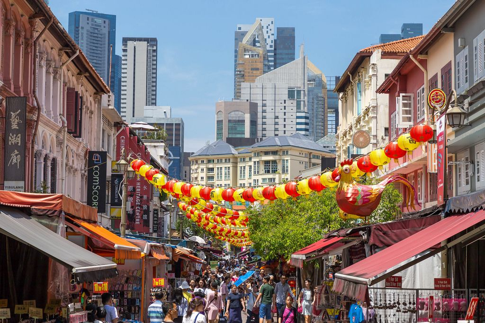
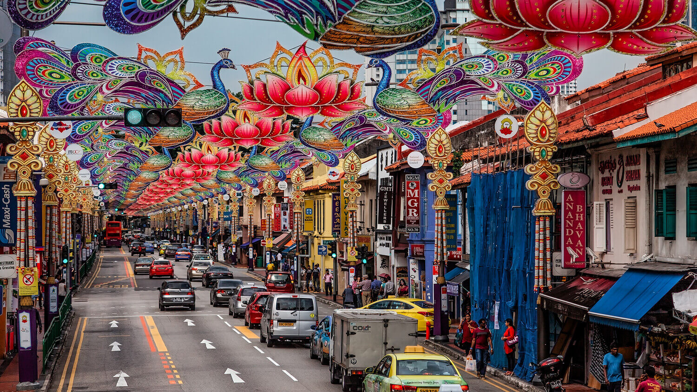
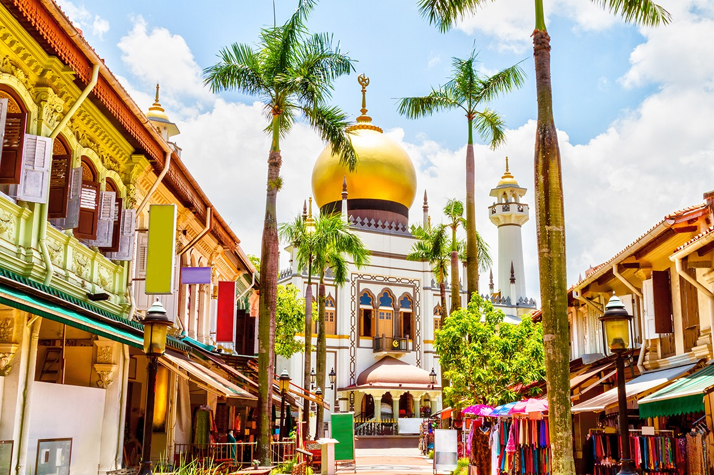
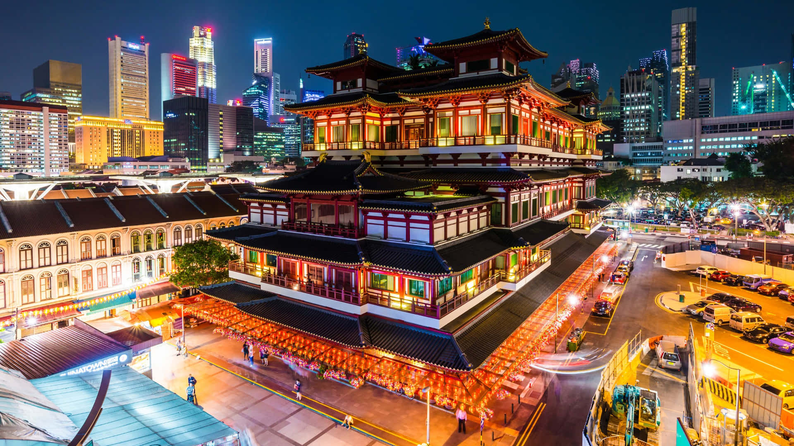
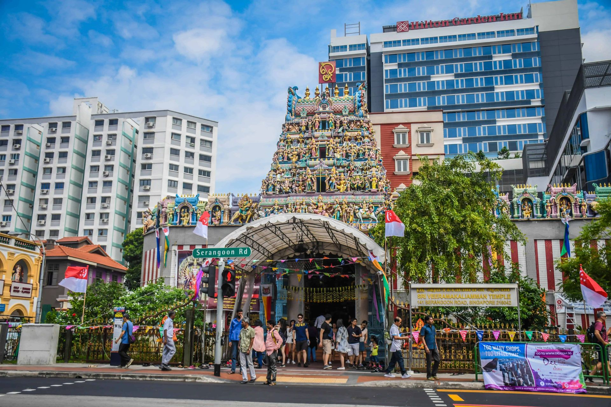
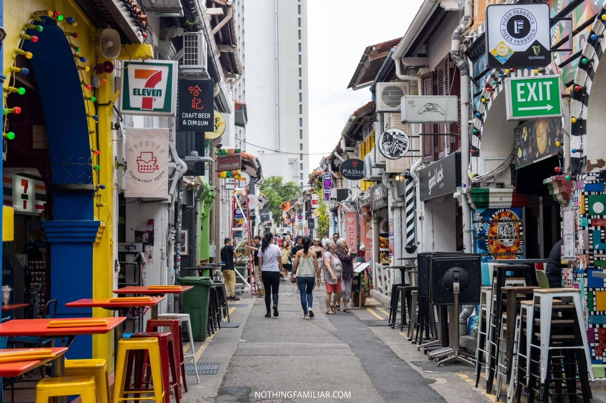

Chinatown
Good for temple stops, shophouse photos, souvenirs, and a quick meal around the market area.
Best stop: Buddha Tooth Relic Temple area
Culture & Heritage
Some parts of Singapore are better when you do not rush. The older streets have shophouses, places of worship, food stalls, and small shops sitting beside newer cafes and offices.
This page focuses on three districts that visitors can realistically walk around in one afternoon.
I grouped the places by neighbourhood because it is easier to plan the walk this way.

Good for temple stops, shophouse photos, souvenirs, and a quick meal around the market area.
Best stop: Buddha Tooth Relic Temple area

The streets feel busier here, with flower stalls, spice shops, textile stores, and colourful building fronts.
Best stop: Serangoon Road

A nice route can start at Sultan Mosque, then continue towards Arab Street and Haji Lane.
Best stop: Sultan Mosque
Pick one district instead of rushing through all three. Spend about one to two hours walking, taking photos, and comparing the older buildings with the newer shops around them.
For our route, Kampong Gelam works well because the main landmarks are close together and the street art makes the area feel different from the usual shopping streets.
These images support the neighbourhood cards above, so the page does not feel like plain text only.



Which heritage district is known for Sultan Mosque and Haji Lane murals?
Choose one answer.